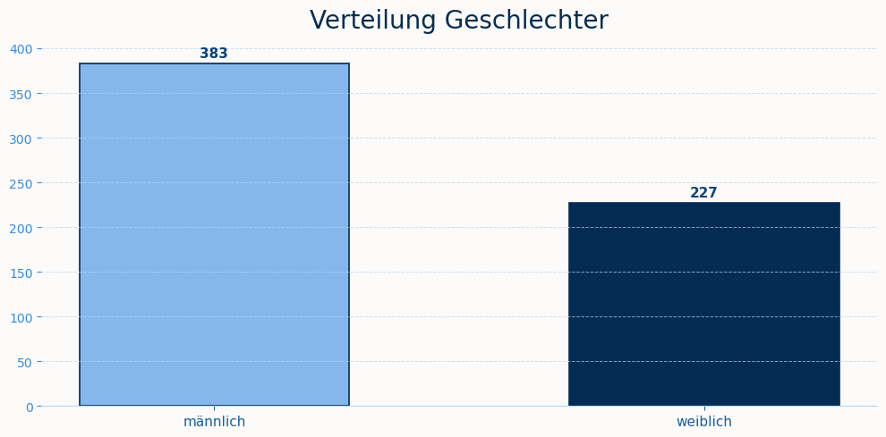
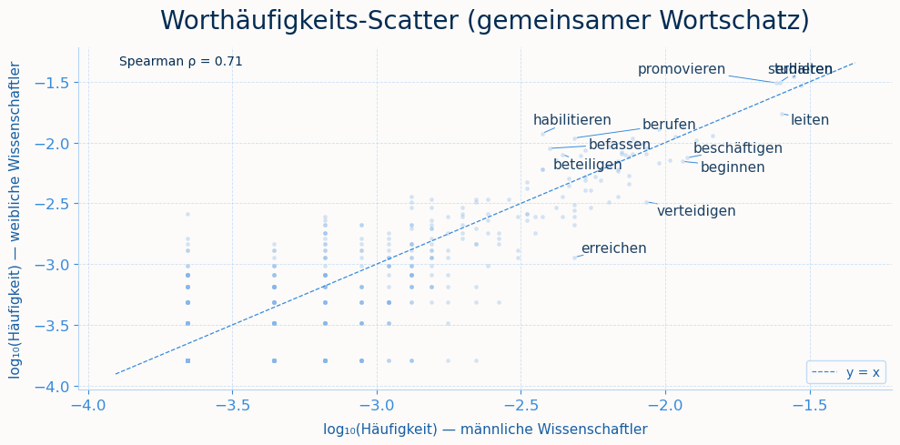
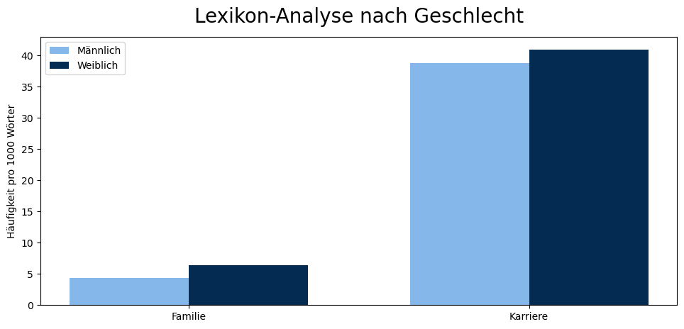

import pandas as pd
from nltk.corpus import stopwordsGender Bias in Wikipedia-Biografien in der Wissenschaft
Gender Bias in Wikipedia-Biografien in der Wissenschaft
import sys
sys.path.append('..')
from src.functions import plot_gender, preprocessing, rang_corr, pmi, lexikon_analyse, plot_rank_scatter, plot_lexikon, plot_pmi, normalisiere_genus1 Motivation
Wikipedia ist das größte frei zugängliche Wissensarchiv. Sie wird von vielen Personen als neutrale Quelle wahrgenommen (Elmimouni et al. 2022). Gleichzeitig ist sie eine wichtige Grundlage, um beispielsweise Sprachmodelle zu trainieren. Verzerrungen in den Artikeln können sich so auf nachgelagerte Systeme übertragen (Criado-Perez 2020). Um einen möglichen Bias nicht auf andere Systeme zu übertragen ist es zwingend notwendig diesen zu testen und ihnen entgegenzuwirken. Wir untersuchen, ob ein Gender Bias den Wikipedia-Biografien von deutschen Wissenschaftlerinnen und Wissenschaftlern zu finden ist. Wir haben uns dabei auf eine sprachliche Auswertung fokussiert, da Wikipedia Artikel mit den Biografien der Wissenschaftler bereitstellt.
Ein zentraler Bereich solcher Verzerrungen ist der Gender Bias. Viele Datensätze sind implizit männlich geprägt, weil Männer historisch lange als gesellschaftliche Norm galten. Das gilt auch für Wikipedia, wo sowohl Autor:innen als auch Inhalte über Jahrzehnte männlich dominiert waren. Dabei beschreibt Hyde (2005), dass sich Männer und Frauen in den meisten psychologischen Merkmalen kaum unterscheiden. Dennoch zeigen sich in den Biografien deutliche Unterschiede, das spricht eher für eine sozial konstruierte Verzerrung in der Darstellung als für biologische Unterschiede.
1.1 Gender Bias in Wikipedia-Biografien
Gender Bias auf Wikipedia lässt sich auf zwei Ebenen beobachten: strukturell und sprachlich-inhaltlich. Auf struktureller Ebene sind Frauen in Biografien historisch unterrepräsentiert (Konieczny and Klein 2018; Wagner et al. 2015). Konieczny and Klein (2018) zeigen, dass der globale Frauenanteil unter Wikipedia-Biografien bei nur rund 15–16 % liegt, wenngleich er seit dem 19. Jahrhundert stetig steigt. Wagner et al. (2015) relativieren diesen Befund teilweise: Im Vergleich zu externen Referenzlisten sind Frauen auf Wikipedia eher leicht über- als unterrepräsentiert.
Deutlich konsistenter fallen die Befunde auf sprachlich-inhaltlicher Ebene aus, auf die sich unsere Arbeit fokussiert. Graells-Garrido et al. (2015) zeigen, dass Frauenbiografien stärker mit Ehe, Familie und Sexualität assoziiert werden, während Männerbiografien häufiger kognitive Prozesse und berufliche Leistungen betonen. Wagner et al. (2015) bestätigen dieses Muster über sechs Sprachversionen hinweg (darunter Deutsch): Begriffe aus den Kategorien Familie, Beziehung und Geschlecht treten in Frauenbiografien deutlich häufiger auf. Sun and Peng (2021) erweitern diesen Befund: Private Ereignisse wie eine Heirat erscheinen bei Frauen sogar im Karriere-Abschnitt, bei Männern hingegen im Privatleben. Brun et al. (2022) bestätigen dies: Frauen werden eher mit Familie, Männer eher mit Beruf und Sport assoziiert, und die für Frauen typischen Adjektive fallen zudem subjektiver aus. Solche Muster lassen sich unter dem Begriff des linguistischen Bias fassen. Der Asymmetrie in der Wortwahl, die soziale Kategorisierungen widerspiegelt (Brun et al. 2022). Als mögliche Ursache wird in der Literatur häufig die demografische Schieflage der Wikipedia-Autor:innen angeführt, von der laut Graells-Garrido et al. (2015) nur rund 16 % Frauen sind.
1.2 Intersektionalität und die Grenzen binärer Kategorien
Die Soziologin Collins (1990) beschreibt mit dem Konzept der Matrix of Domination, dass Unterdrückungs- und Privilegierungsverhältnisse verschränkt wirken: Wer in einer Hinsicht privilegiert ist, kann in einer anderen benachteiligt sein. Diese Achsen lassen sich nicht einfach trennen oder aufaddieren. Collins formuliert, dass die Matrix of Domination “few pure victims or oppressors”. D’Ignazio and Klein (2020) greifen dieses Konzept explizit auf und fordern, binäre Geschlechterkategorisierungen in Daten kritisch zu hinterfragen, da sie reale soziale Komplexität verdecken. Wir betrachten ausschließlich die Kategorie Geschlecht und blenden andere mögliche Achsen wie Herkunft, Fachrichtung oder Status aus. Dies ist eine methodische Einschränkung und eine analytische Vereinfachung, die bei der Interpretation der Ergebnisse berücksichtigt wird.
1.3 Forschungslücke und Forschungsfragen
Trotz umfangreicher Forschung fällt auf, dass sich die meisten Studien entweder auf die englischsprachige Wikipedia oder auf allgemeine Personengruppen wie Prominente, Politiker:innen oder Sportler:innen konzentrieren. Studien, die sich spezifisch mit Wissenschaftler:innen in deutschsprachigen Biografien befassen, gibt es keine. Genau hier setzt unsere Arbeit an: Wir wenden Worthäufigkeits-, PMI- und lexikonbasierte Methoden auf eine Stichprobe deutscher Wikipedia-Biografien von Wissenschaftler:innen an und orientieren uns methodisch an Graells-Garrido et al. (2015) sowie Omrani Sabbaghi and Caliskan (2022). Daraus ergeben sich folgende Forschungsfragen:
- Bestehen sprachliche Unterschiede zwischen den Biografien von männlichen und weiblichen Wissenschaftler:innen auf der deutschen Wikipedia?
- Werden Wissenschaftlerinnen in ihren Biografien stärker mit privaten Themen (Familie, Ehe, Kinder) assoziiert, während bei Wissenschaftlern eher berufliche Themen (Karriere, Leistung) im Vordergrund stehen?
2 Daten und Methodik
Für unsere Analyse werten wir 610 Wikipedia-Artikel aus. Wir betrachten die Biographien von deutschen Wissenschaftler:innen, die zwischen 1950 und 2000 geboren sind. Denn der jüngste Wissenschaftler, über den es eine Wikipedia-Biographie gibt, ist im Jahr 2000 geboren. So haben wir die letzten 50 Jahre mit einbezogen. Zudem wollen wir eine Analyse mit aktuellen Texten machen, denn es ist anzunehmen, dass vor allem in den letzten Jahren eine stärkere Sensibilisierung für Gender Bias stattgefunden hat, die sich in den Biographien widerspiegeln könnte.
Zunächst haben wir mittels SPARQL-Abfrage eine Liste ausgeben lassen aller deutschen Wikipedia-Artikel Titel von Wissenschaftler:innen. Mit Hilfe der Wikipedia-API konnten wir dann die tatsächlichen Texte herunterladen und in einem DataFrame speichern. Dabei wurden die Artikel nach Geschlecht gefiltert, um zwei Gruppen zu bilden: männliche und weibliche Wissenschaftler:innen.
"""df_wiki = pd.read_csv("../data/wiki_results.csv") # Datensatz mit dem Namen der Person, der URL und dem Geschlecht
df_wiki["title"] = df_wiki["article"].str.split("/").str[-1]
df_wiki["title"] = df_wiki["title"].str.replace("_", " ")
# Wikipedia Artikel herunterladen (kann etwas dauern). Es kann gleich mit der wikipedia_text.csv gearbeitet werden, in der sind die Texte enthalten.
wiki = wikipediaapi.Wikipedia(
language='de',
user_agent='research-project'
)
data = []
for title in df_wiki["title"]:
page = wiki.page(title)
if page.exists():
data.append({
"title": title,
"text": page.text
})
df = pd.DataFrame(data)
print(df["text"][0][:1000])"""'df_wiki = pd.read_csv("../data/wiki_results.csv") # Datensatz mit dem Namen der Person, der URL und dem Geschlecht\n\ndf_wiki["title"] = df_wiki["article"].str.split("/").str[-1]\ndf_wiki["title"] = df_wiki["title"].str.replace("_", " ")\n\n# Wikipedia Artikel herunterladen (kann etwas dauern). Es kann gleich mit der wikipedia_text.csv gearbeitet werden, in der sind die Texte enthalten.\nwiki = wikipediaapi.Wikipedia(\n language=\'de\',\n user_agent=\'research-project\'\n)\n\ndata = []\n\nfor title in df_wiki["title"]:\n page = wiki.page(title)\n\n if page.exists():\n data.append({\n "title": title,\n "text": page.text\n })\n\ndf = pd.DataFrame(data)\n\nprint(df["text"][0][:1000])'Geschlechterverteilung in den Wikipedia-Biografien
Für unsere Analyse betrachten wir nur männliche und weibliche Personen. Alle weiteren Geschlechtsidentitäten wurden aus dem Datensatz entfernt. Da sie einerseits zahlenmäßig zu gering vertreten sind, um statistisch belastbare Aussagen zu liefern und andererseits die bestehende Forschung zu Gender Bias auf Wikipedia sich primär auf die binäre Gegenüberstellung von Männern und Frauen bezieht, an der wir uns methodisch orientieren.
df = pd.read_csv("../data/wikipedia_text.csv", sep = ",") #Datensatz einlesen
plot_gender(data = df)
2.1 Preprocessing: Stopwörter, Tokenisierung und Corpora
Zunächst werden Überschriften entfernt und die Texte per Regex tokenisiert, wobei nur alphabetische Zeichen und deutsche Umlaute berücksichtigt werden. Stoppwörter werden auf Basis der NLTK-Standardlisten für Deutsch und Englisch gefiltert und um häufige, aber inhaltlich wenig informative Wörter aus den Wikipedia-Texten ergänzt. Die Analyse beschränkt sich dabei auf Verben, da diese im Deutschen (anders als Adjektive oder Artikel) nicht nach Geschlecht flektiert werden und somit eine geschlechtsneutrale Vergleichsgrundlage bieten. Alle Tokens werden mit spaCy lemmatisiert: so werden etwa forscht, forschte und geforscht einheitlich als forschen gezählt. Dieses Vorgehen folgt Graells-Garrido et al. (2015). Die Tokens werden getrennt nach Geschlecht aggregiert und bilden die Grundlage für die Häufigkeits- und PMI-Analyse.
STOPWORDS = set(stopwords.words("german")) | set(stopwords.words("english"))
corpus = preprocessing(data = df, STOPWORDS = STOPWORDS, nur_verben=True)3 Ergebnisse
Die Analyse folgt einem gestuften methodischen Vorgehen. Als ersten explorativen Schritt betrachten wir die relativen Worthäufigkeiten und berechnen die Spearman-Rangkorrelation, um einen ersten Eindruck davon zu gewinnen, wie ähnlich die Verbverwendung in männlichen und weiblichen Biografien insgesamt ist. Da häufige Wörter die Häufigkeitsanalyse dominieren können, ohne dabei geschlechtsspezifisch zu sein, wird im zweiten Schritt die PMI-Analyse eingesetzt: Sie identifiziert Verben, die überproportional stark mit einem Geschlecht assoziiert sind. Beide Methoden sind dabei rein datengetrieben und folgen dem explorativen Vorgehen von Graells-Garrido et al. (2015). Um die Ergebnisse theoriegeleitet zu ergänzen und gezielt auf inhaltliche Dimensionen wie Familie und Karriere zu prüfen, wird abschließend eine Lexikonanalyse durchgeführt, die auf einer selbst erstellten Wortliste basiert.
3.1 Worthäufigkeiten und Rangkorrelation
Zur Analyse der Worthäufigkeiten wird für beide Korpora die relative Häufigkeit jedes Tokens berechnet, indem die Anzahl der Vorkommen durch die Gesamtzahl der Tokens geteilt wird. Um zu bewerten, wie ähnlich die Häufigkeitsverteilungen zwischen männlichen und weiblichen Biografien sind, wird anschließend die Spearman-Rangkorrelation über alle gemeinsamen Tokens berechnet. Der resultierende Korrelationskoeffizient (ρ) gibt an, inwieweit die Rangordnungen der Verbhäufigkeiten in beiden Gruppen übereinstimmen.
freq = rang_corr(corpus=corpus)Rang-Korrelation (gemeinsames Vokabular, n=520):
ρ = 0.705 p = 2.27e-79Der Spearman-Korrelationskoeffizient von ρ = 0.705 in unserer Analyse steht für eine stark positive Korrelation zwischen den Häufigkeiten der gemeinsamen Tokens in den männlichen und weiblichen Biografien. Der Großteil des Vokabulars wird also von beiden Gruppen geteilt und ähnlich verteilt verwendet. Zudem ist die Korrelation statistisch signifikant, was darauf hindeutet, dass die beobachtete Ähnlichkeit nicht zufällig ist. Insgesamt deutet dies auf eine starke Überschneidung im Vokabular hin in der Wortwahl (gemeinsames Vokabular n = 520) zwischen männlichen und weiblichen Biografien. Dennoch gibt es auch Unterschiede, die auf geschlechtsspezifische Assoziationen in der Sprache hinweisen.
Die Ergebnisse werden in einem Scatter-Plot visualisiert, der die logarithmierte relative Häufigkeit jedes Verbs in männlichen gegenüber weiblichen Biografien darstellt, wobei Abweichungen von der Diagonalen auf eine stärkere Assoziation mit einem der beiden Geschlechter hinweisen.
plot_rank_scatter(freq_m=freq[0], freq_f=freq[1])
3.2 PMI: Wortassoziationen pro Gruppe
PMI (Pointwise Mutual Information) misst die Stärke der Assoziation zwischen einem Wort und einer Gruppe (männlich oder weiblich) im Vergleich zur allgemeinen Häufigkeit des Wortes. Ein hoher Wert für ein Wort in der Gruppe weiblich würde darauf hindeuten, dass dieses Wort deutlich häufiger in den Biografien von Wissenschaftlerinnen vorkommt. Es werden nur Wörter betrachtet, die mindestens 60 Mal in den gesamten Corpora vorkommen, um eine Relevanz sicherzustellen und Rauschen durch seltene Wörter zu vermeiden. Durch die Berechnung der PMI können wir also herausfinden, welche Wörter besonders charakteristisch für die Biografien von Wissenschaftlerinnen bzw. Wissenschaftlern sind und damit mögliche geschlechtsspezifische Assoziationen in der Sprache aufdecken.
Die Analyse zeigt systematische Unterschiede in den Verben, die im Korpus von männlichen bzw. weiblichen Personen vorkommen. Die Werte sind insgesamt moderat (alle unter +0.50), was darauf hindeutet, dass die Assoziation statistisch konsistent, aber nicht stark ausgeprägt ist. Sie sprechen für subtile, aber systematische Muster im Sprachgebrauch. Auf der männlichen Seite dominieren Verben, die formale institutionelle Prozesse beschreiben: habilitieren, promovieren, berufen und ernennen verweisen auf akademische Karriereschritte und Positionsvergaben, während übernehmen, gründen und beteiligen auf strukturelle Handlungsmacht hindeuten. Diese Verben sind nicht primär tätigkeitsbeschreibend, sondern markieren Statusübergänge und institutionelle Anerkennung.
Die weiblich assoziierten Verben zeigen ein anderes Muster: forschen, lehren, untersuchen und leiten beschreiben konkrete Tätigkeiten und fachliche Handlungen. Bemerkenswert ist, dass führen und leiten, die semantisch auf Leitungspositionen verweisend, auf der weiblichen Seite erscheinen, ohne dort von statusbezogenen Verben wie berufen oder ernennen begleitet zu werden. Frauen werden zwar als tätig und leitend dargestellt, jedoch seltener im Zusammenhang mit formaler institutioneller Beförderung. Das spiegelt sich auch in den Zahlen von Frauen in W3 Professuren wieder. Frauen und Männer starten in einem praitätischen Verhältnis das Studium und je höher die akademische Karriere, desto geringer wird der Frauenanteil. In der Professursebene W3 liegt der Frauenanteil bei 25,5 % (Statistisches Bundesamt (Destatis) 2023). Die Ergebnisse der PMI-Analyse deuten darauf hin, dass diese strukturelle Ungleichheit in den Biografien sprachlich abgebildet wird: Frauen werden als tätig und leitend beschrieben, aber seltener im Zusammenhang mit formaler institutioneller Beförderung. Hervorzuheben ist außerdem gebären als stärkstes weiblich assoziiertes Verb, was auf eine diskursive Verknüpfung von Weiblichkeit mit Reproduktion hindeutet, die neben den akademischen Tätigkeitsverben fortbesteht.
pmi_dict = pmi(corpus=corpus)
plot_pmi(pmi_data=pmi_dict, top_n=12)3.3 Lexikon-basierte Analyse
Um zu prüfen, ob biografische Wikipedia-Artikel über Wissenschaftler:innen geschlechtsspezifisch unterschiedliche thematische Schwerpunkte setzen, wurde eine Lexikon-basierte Analyse durchgeführt. Im Unterschied zur PMI-Analyse, die datengetrieben Wortassoziationen identifiziert, folgt dieser Ansatz einer theoriegeleiteten Logik: Ausgangspunkt sind zwei semantische Kategorien: Familie und Karriere. Für beide Kategorien wurden Wortlisten auf Basis bestehender Forschung zu Gender-Bias in biografischen Texten sowie eigener inhaltlicher Überlegungen erstellt.
Für diese Analyse wurde, anders als bei der verbbasierten PMI-Analyse, der vollständige Wortschatz (Nomen, Verben, Adjektive, Adverbien) verwendet, da die Lexikoneinträge mehrheitlich aus Substantiven bestehen (z. B. Habilitation, Auszeichnung, Mutterschaft) und mit einem reinen Verbkorpus systematisch unterrepräsentiert worden wären. Die Texte wurden lemmatisiert, um beispielsweise die Grundform von Verben zu erhalten, sowie um Stoppwörter bereinigt.
Für jede Kategorie wurde geprüft, ob die Wörter der Lexikoneinträge tatsächlich im Korpus der Wikipedi-Artikel auftreten. Das Lexikon wurde iterativ erweitert und Wörter, die in den Artikeln nicht vorhanden sind, entfernt. Die Häufigkeit der Lexikon-Treffer wurde pro Geschlecht auf 1.000 Wörter normalisiert, um Unterschiede in der Korpusgröße auszugleichen. Zur Prüfung, ob beobachtete Unterschiede statistisch signifikant sind, wurde ein Chi-Quadrat-Unabhängigkeitstest auf Basis der absoluten Trefferzahlen durchgeführt.
Limitierend ist anzumerken, dass die beiden Lexika unterschiedlich umfangreich sind (Karriere: 52 Wörter, Familie: 27 Wörter), was die Vergleichbarkeit der Trefferzahlen potenziell beeinflusst. Zudem handelt es sich bei den Lexika um eine selbst erstellte, nicht extern validierte Wortliste, deren Konstruktion einer gewissen Subjektivität unterliegt.
# Korpus erstellen mit allen Wörtern, nicht nur verben
corpus_all = preprocessing(data = df, STOPWORDS = STOPWORDS, nur_verben=False)
LEXIKA = {
"Familie": {'eltern', 'geschwister', 'geboren', 'baby', 'neffe', 'partner', 'kind', 'heirat', 'sohn', 'schwanger', 'ehe', 'mutterschaft', 'familie', 'geburt', 'tochter', 'witwe', 'erziehung', 'mutter', 'verwitwet', 'vater', 'ehefrau', 'beziehung', 'haushalt', 'elternzeit', 'betreuung', 'verheiratet', 'ehemann'},
"Karriere":
{'veröffentlichung', 'stelle', 'institutsleiter', 'nominiert', 'geschäftsführer', 'preis', 'monographie', 'promotion', 'labor', 'pionier', 'verteidigen', 'patent', 'bedeutend', 'befördern', 'award', 'wählen', 'stipendium', 'konferenz', 'abteilungsleiter', 'doktorarbeit', 'dekan', 'publikation', 'ernennen', 'amt', 'gewann', 'dissertation', 'gehalt', 'karriere', 'auszeichnung', 'arbeit', 'buch', 'übernehmen', 'studie', 'habilitation', 'forschung', 'direktor', 'wegweisend', 'einflussreich', 'abschluss', 'präsident', 'herausgeber', 'verliehen', 'erstmals', 'artikel', 'vorstand', 'graduiert', 'lehrstuhl', 'vortrag', 'position', 'beruf', 'erfindung', 'professur'}
}
GENUS_MAPPING = {
"direktorin": "direktor",
"herausgeberin": "herausgeber",
"geschäftsführerin": "geschäftsführer",
"partnerin": "partner",
"institutsleiterin": "institutsleiter"
}
corpus_norm = {
g: normalisiere_genus(tokens, GENUS_MAPPING)
for g, tokens in corpus_all.items()
}
ergebnisse = lexikon_analyse(corpus_norm, LEXIKA) #Mit dem Genus-normalisierten Korpus| Kategorie | männlich (‰) | weiblich (‰) | Differenz (w−m) | χ² | p-Wert | |
|---|---|---|---|---|---|---|
| 1 | Karriere | 38.832 | 40.896 | 2.064 | 2.45 | 0.1173 |
| 0 | Familie | 4.364 | 6.378 | 2.014 | 17.30 | 0.0000 |
Die Ergebnisse zeigen ein klar unterschiedliches Bild für die beiden untersuchten Kategorien. Für die Kategorie Familie zeigt sich ein signifikanter Unterschied (χ²=17.30, p<.001). Inhaltlich konzentriert sich der Effekt auf wenige, aber starke Wörter: Kind (+0.851), Mutter (+0.438) und Tochter (+0.385) sind deutlich stärker mit weiblichen Biografien assoziiert, während Sohn (-0.302) und Beziehung (-0.150) stärker bei männlichen Biografien auftreten. Besonders ist, dass dieser Effekt primär durch die direkte Mutter-Kind-Beziehung getragen wird (Kind, Mutter, Erziehung, Mutterschaft), während andere Familienrollen wie Vater, Ehefrau oder Witwe nur schwach oder uneindeutig ausschlagen. Die Reduktion der Wissenschaftlerin auf die Mutterrolle ist ein in der Genderforschung wiederkehrendes Muster und steht im Einklang mit der Hypothese einer stärkeren biologisch-reproduktiven Rahmung von Frauenbiografien. Daher kann die Hypothese H2 belegt werden.
Für die Kategorie Karriere ergibt sich dagegen kein statistisch signifikanter Unterschied (χ²=2.45, p=.117). Das bedeutet: Karrierebezogene Sprache ist in etwa gleich häufig in Biografien über Männer und Frauen vertreten. Dieses Muster lässt sich so interpretieren: Der Gesamtumfang karrierebezogener Sprache unterscheidet sich nicht zwischen den Geschlechtern. Frauen werden also nicht grundsätzlich seltener im Kontext von Karriere beschrieben. Allerdings zeigt sich eine qualitative Asymmetrie innerhalb der Kategorie: Frauen werden eher über ihre fachliche Tätigkeit und Leistung beschrieben (Forschung, Lehre, akademischer Abschluss), Männer eher über formale Machtpositionen und institutionelle Anerkennung (Leitungsämter, Berufungen, Wahlen). Dieser Befund passt zum bereits diskutierten Bias: Frauen müssen ihre fachliche Kompetenz expliziter durch konkrete Leistungsnachweise (Publikationen, Dissertationen) belegen, während bei Männern eher der formale Statusaufstieg selbst thematisiert wird, unabhängig von der zugrunde liegenden fachlichen Leistung. Eine zweite, nicht ausschließende Erklärung betrifft den Survivorship-Bias der Stichprobe: Frauen, die einen Wikipedia-Artikel als Wissenschaftlerin erhalten, könnten im Schnitt eine selektivere, leistungsstärkere Teilgruppe darstellen als ihre männlichen Kollegen, schlicht weil die Hürde zur Aufnahme in die Enzyklopädie für Frauen historisch höher lag.
plot_lexikon(ergebnisse)
4 Diskussion
Die Ergebnisse zeigen, dass sich die Wikipedia Biografien männlicher und weiblicher Wissenschaftler:innen vom Wortschatz her sehr ähnlich sind. Die Analyse mitts keinen gesamtgesellschaftlichen Diskurs misst, sondern den sprachlichen Bias einer spezifischen Autor:innengruppe: Studien zeigen, dass die überwiegende Mehrheit der Wikipedia-Autor:innen männlich, westlich und akademisch geprägt ist. Wikipedia ist damit kein neutraler Spiegel der Realität, sondern ein von dieser Gruppe konstruiertes Dokument, was sich nicht nur darin niederschlägt, welche Personen einen Artikel erhalten, sondern auch darin, wie sie beschrieben werden.
Eng damit verbunden ist das Sampling-Problem. Der Ausschluss nicht-binärer Personen aufgrund geringer Fallzahlen reproduziert eine binäre Geschlechterlogik auf der Analyseebene, die auf der Gegenstandsebene bereits problematisch ist. Wie D’Ignazio and Klein (2020) betonen, ist die Unsichtbarkeit bestimmter Gruppen in Daten ein Ausdruck struktureller Ungerechtigkeit.
Auf der Ebene der Datenaufbereitung bringt die Entscheidung, ausschließlich Verben zu analysieren, einen systematischen Fokus mit sich, der bestimmte Formen von Bias sichtbar macht und andere verschleiert. Adjektivische Zuschreibungen, etwa ambitioniert, fürsorglich oder emotional, sind für die Geschlechterforschung mindestens ebenso relevant, fehlen hier aber vollständig. Durch eine Analyse mit beispielsweise Word-Embeddings könnten auch in der deutschen Sprache semantische Assoziationen zwischen Wörtern und Geschlecht untersucht werden, wie es Sun and Peng (2021) für die englische Wikipedia getan haben.
Die PMI-Methode ist anfällig für ein bekanntes Problem: Der PMI belohnt also starke Ungleichverteilung, auch wenn diese auf wenigen Beobachtungen beruht. Das bedeutet: Ein Wort kann den Schwellenwert von 60 Vorkommen erreichen, aber trotzdem fast ausschließlich in einem der beiden Korpora vorkommen (zum Beispiel 58 Mal bei Frauen und 2 Mal bei Männern). Der PMI-Wert wäre dann sehr hoch, obwohl die Datenbasis für eine der beiden Gruppen extrem dünn ist.
Schließlich fehlt eine intersektionale Perspektive. Die Analyse behandelt Geschlecht als isolierte Variable, obwohl Collins (1990) mit dem Konzept der Matrix of Domination gezeigt hat, dass Geschlecht nicht unabhängig von Klasse, Ethnizität oder Profession wirkt. Dass etwa habilitieren männlich assoziiert ist, könnte ebenso gut akademische Milieu- oder Klasseneffekte abbilden wie Geschlechtereffekte. Eine weiterführende Analyse könnte die intersektionale Perspektibe einbeziehen, indem sie die Daten nach weiteren Variablen wie Fachrichtung oder Nationalität segmentiert und prüft, ob die beobachteten Muster weiterhin bestehen.
References
Brun, Natalie Bolón, Sofia Kypraiou, Natalia Gullón Altés, and Irene Petlacalco Barrios. 2022. Wikigender: A Machine Learning Model to Detect Gender Bias in Wikipedia. arXiv. https://doi.org/10.48550/arXiv.2211.07520.
Collins, Patricia Hill. 1990. Black Feminist Thought: Knowledge, Consciousness, and the Politics of Empowerment. Unwin Hyman. https://files.commons.gc.cuny.edu/wp-content/blogs.dir/17925/files/2021/08/patricia_hill_collins_black_feminist_thought_in_the_matrix_of_domination.pdf.
Criado-Perez, Caroline. 2020. Unsichtbare Frauen: Wie Eine von Daten Beherrschte Welt Die Hälfte Der Bevölkerung Ignoriert. Btb Verlag.
D’Ignazio, Catherine, and Lauren F. Klein. 2020. Data Feminism. The MIT Press. https://data-feminism.mitpress.mit.edu/.
Elmimouni, Houda, Andrea Forte, and Jonathan Morgan. 2022. “Why People Trust Wikipedia Articles: Credibility Assessment Strategies Used by Readers.” Proceedings of the 18th International Symposium on Open Collaboration (Madrid Spain), September, 1–10. https://doi.org/10.1145/3555051.3555052.
Graells-Garrido, Eduardo, Mounia Lalmas, and Filippo Menczer. 2015. “First Women, Second Sex: Gender Bias in Wikipedia.” Proceedings of the 26th ACM Conference on Hypertext & Social Media (New York, NY, USA), HT ’15, August, 165–74. https://doi.org/10.1145/2700171.2791036.
Hyde, Janet Shibley. 2005. “The Gender Similarities Hypothesis.” The American Psychologist 60 (6): 581–92. https://doi.org/10.1037/0003-066X.60.6.581.
Konieczny, Piotr, and Maximilian Klein. 2018. “Gender Gap Through Time and Space: A Journey Through Wikipedia Biographies via the Wikidata Human Gender Indicator.” New Media & Society 20 (12): 4608–33. https://doi.org/10.1177/1461444818779080.
Omrani Sabbaghi, Shiva, and Aylin Caliskan. 2022. “Measuring Gender Bias in Word Embeddings of Gendered Languages Requires Disentangling Grammatical Gender Signals.” Proceedings of the 2022 AAAI/ACM Conference on AI, Ethics, and Society (Oxford United Kingdom), July, 518–31. https://doi.org/10.1145/3514094.3534176.
Statistisches Bundesamt (Destatis). 2023. 28 % Frauenanteil in Der Professorenschaft 2022. Pressemitteilung Nr. 481. https://www.destatis.de/DE/Presse/Pressemitteilungen/2023/12/PD23_481_213.html.
Sun, Jiao, and Nanyun Peng. 2021. Men Are Elected, Women Are Married: Events Gender Bias on Wikipedia. https://doi.org/10.48550/arXiv.2106.01601.
Wagner, Claudia, David Garcia, Mohsen Jadidi, and Markus Strohmaier. 2015. It’s a Man’s Wikipedia? Assessing Gender Inequality in an Online Encyclopedia. https://doi.org/10.48550/arXiv.1501.06307.